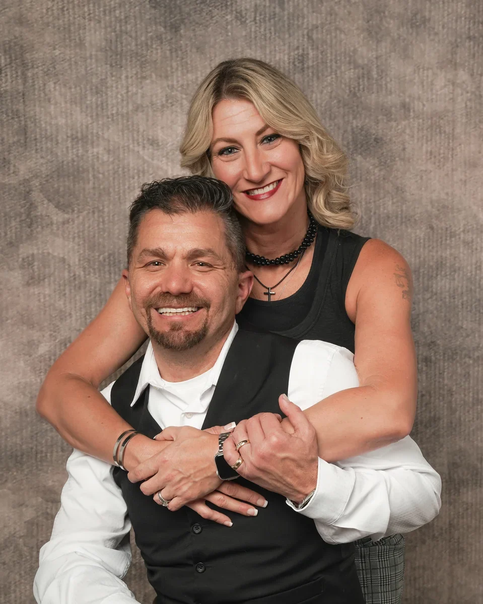
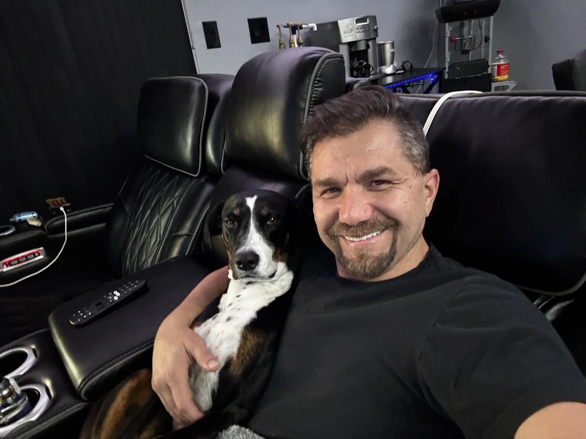
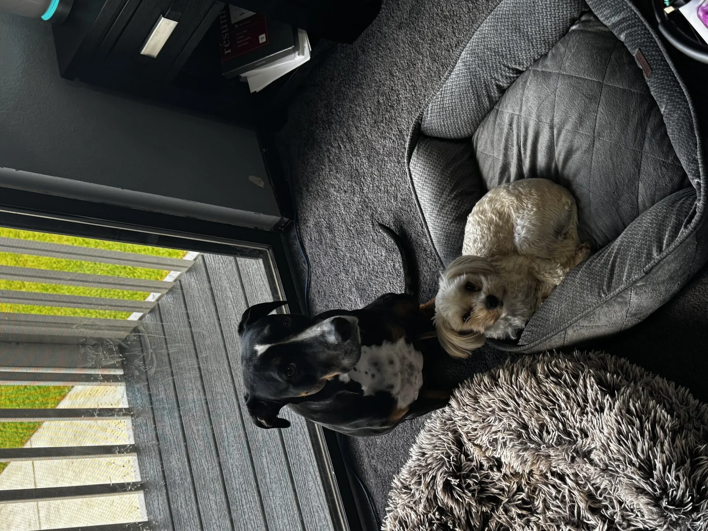
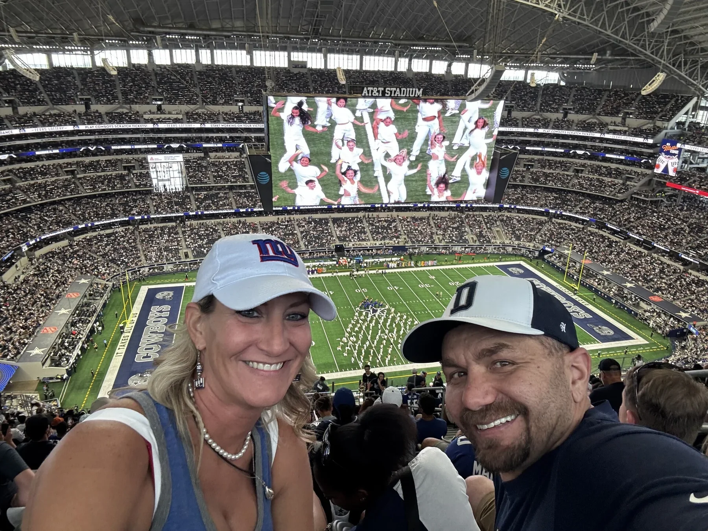
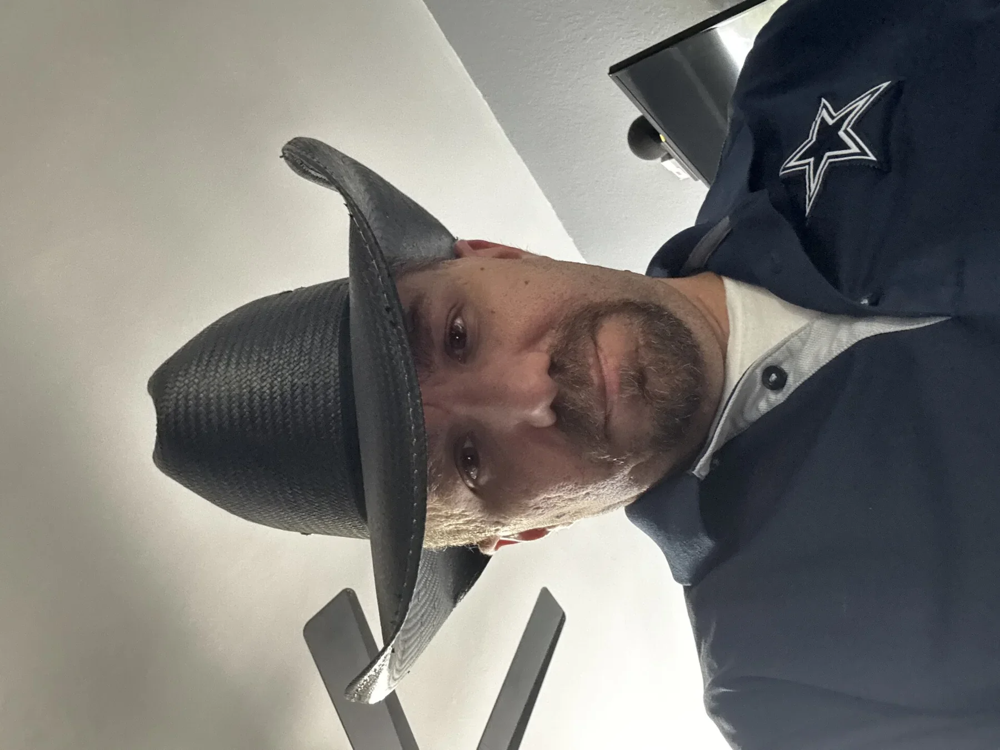

Life outside work
The person behind the résumé.
Work matters, but it is not the whole story. Family, dogs, football, cooking, technology projects and a steady stream of things to build or improve keep life interesting.

The people closest to me keep everything else in perspective.

Strong opinions. Questionable calendar management.

Experts in morale, snack timing and unplanned breaks.

Football is part strategy, part execution and part emotional damage.

Technology, space and the next interesting thing to learn.

Travel, new experiences and enough distance to reset the brain.
BBQ & cooking
I like the process almost as much as the result. Preparation, patience and knowing when to stop messing with it usually win.
Technology & automation
Home servers, networking, automation and projects that begin as a convenience and somehow become infrastructure.
Jeep & house projects
I enjoy hands-on work, troubleshooting, and seeing a project through from start to finish. My father taught me how to build, repair, and figure things out, so working on my Jeep or tackling a house project has always felt natural.